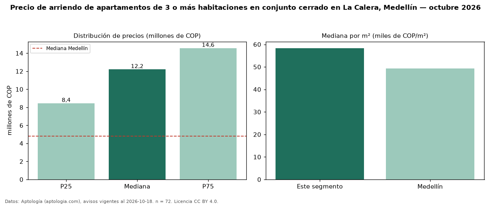

Precio de arriendo de apartamentos de 3 o más habitaciones en conjunto cerrado en La Calera, Medellín — octubre 2026
COP 12,20 millones al mes es el canon mediano de apartamentos de 3 o más habitaciones en conjunto cerrado en arriendo en La Calera, Medellín (n = 72 avisos). Frente a la mediana de los apartamentos de 3 o más habitaciones en arriendo de La Calera (COP 11,75 millones, n = 96), queda 4 % por encima; este segmento reúne el 75 % de esos avisos. Por metro cuadrado, la mediana es COP 58.333/m² al mes (n = 71), 0 % por debajo de los apartamentos de 3 o más habitaciones en arriendo de La Calera (COP 58.464/m²). El área mediana anunciada es 210 m². El estrato más frecuente es 6 (92 % de los avisos con estrato). La mitad central de los avisos va de COP 8,45 millones a COP 14,56 millones (razón 1,7), una dispersión moderada. La mediana de todos los apartamentos en arriendo de Medellín es COP 4,80 millones (+154 % de diferencia). Datos: Aptología (aptologia.com), CC BY 4.0 — https://www.aptologia.com/arriendo/medellin/la-calera. Archivos: PDF, CSV con las cifras y gráfica PNG.

| Avisos únicos | 72 |
|---|---|
| Percentil 25 | COP 8.450.000 |
| Mediana | COP 12.200.000 |
| Percentil 75 | COP 14.562.500 |
| Mediana por m² | COP 58.333 |
Fuente: avisos vigentes de portales inmobiliarios recopilados por Aptología, deduplicados (mínimo 30 avisos únicos por celda). Precios pedidos, no cerrados. Fecha: 2026-10-18.